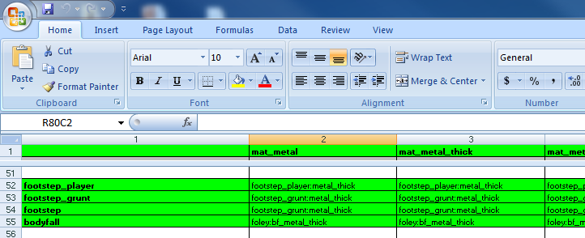
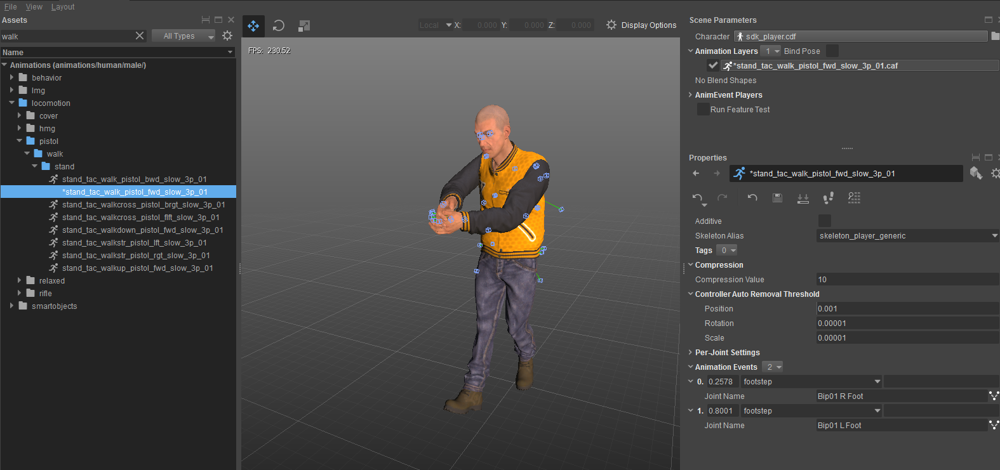
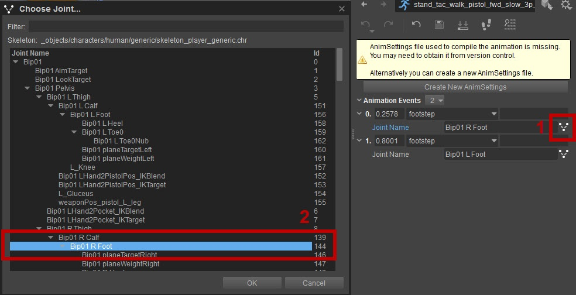
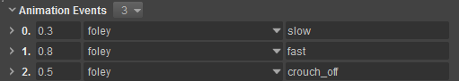

Overview
The Character Tool can trigger Animation Events for Footsteps and Foley which allows the sound to alter on the basis of the character or surface-type while using the same animation.
The article Audio & Character Tool is prerequisite knowledge for the following tutorial.
By making use of the Animation Events in CharacterTools you can achieve:
- character based Footsteps and Foleys.
- animation sync'd Footsteps and Foleys.
- material-based Footsteps.
Technical Detail
Setting up the Footsteps FXLibs
To enable character based Foleys and Footsteps requires "CharacterSounds" entries inside the Entity Lua script.
The following example is taken from the player.lua which can be found under <Game folder>\GameSDK\Assets and in this *.pak,
in Scripts\Entities\actor\.
footstepEffect = "footstep_player", -- Footstep mfx library to useremoteFootstepEffect = "footstep", -- Footstep mfx library to use for remote playersbFootstepGearEffect = 0, -- This plays a sound from materialfxfootstepIndGearAudioSignal_Walk
= "Player_Footstep_Gear_Walk", -- This directly plays the specified
audiosignal on every footstepfootstepIndGearAudioSignal_Run = "Player_Footstep_Gear_Run", -- This directly plays the specified audiosignal on every footstepfoleyEffect = "foley_player", -- Foley signal effect name |
footstepEffect | Specifies the Effect Library to use for first person player view |
remoteFootstepEffect | Specifies the Effect Library to use for third person player view |
bFootstepGearEffect | Specifies whether to play a hard coded gear sound |
footstepIndGearAudioSignal_Walk | Specifies an AudioSignal triggered when walking |
footstepIndGearAudioSignal_Run | Specifies an AudioSignal triggered when running |
foleyEffect | Specifies the Effect Library to use for Foley entries |
After specifying the Footstep Effect Library this entry has to be created in the MaterialEffects.xml table under <Game folder>\Assets\gamedata.pak. Within this *.pak file, the MaterialEffects.xml file can be found in Libs\MaterialEffects.
The MaterialEffects files are within the gamedata.pak.
MaterialEffects.xml opened in Excel 
The corresponding effect (depending on the material) defines the actual audio system Trigger to play. This is done in the Effect Library stored under<k and within this *.pak file, in Game folder>\Assets\gamedata.paLibs\MaterialEffects\FXLibs.
As an example: footsteps_player:metal_thick will look up the effect metal_thick in the foosteps_player.xml that is located in the FXLibs.
Pic2: Footsteps_player.xml
In this case of the audio system Trigger "Play_c_player_fts" is being played for each material, but with a set audio system Switch that is based on the SurfaceType - this changes the sound accordingly.
Setting up Footsteps in Character Tool
For correct timing the "footstep" entry is now required on each animation. This is achieved in the Character Tool and stored in the animevents file.
The following example is taken from < and within this*.pak file, in Game folder>\Animations.pakanimations\human\male\events.animevents.

By double-clicking on the Timeline it is possible to create a new Animation Event that will be triggered when the animation hits the specific point.
For each Animation Event it is possible to select between different types. In order to trigger Footsteps we select "footstep" from the dropdown menu in the Animation Events.
Each Animation Event can also be mapped to a specific bone. By clicking on the bone icon a dropdown menu with a selectionlist can be opened:

For Footsteps it is particularly important to map any bones correctly. This is because particles can also be triggered via the FXLibs.
Setting up Foleys in Character Tool
Character-based Foleys do not need to be run through the MaterialEffects.xml table because they are not dependent on the material. However, they require an Effect Library specifying the audio system triggers for the different Foley actions inside the foley_player XML under <Game folder>\Assets\gamedata.pak and within this *.pak file, in Libs\MaterialEffects\FXLibs.
Character-based Foleys in foley_player.xml
In order to access the specified FXLib we select foley from the dropdown menu of the created Animation Event.
In the screenshot example below, the field on the far right is used to define which Foley action (crouch_off) should be played.

Using the Foley FXLibs can be useful if/when you are using multiple characters, as it allows the sound to be altered on the basis of the character and while using the same animation.
CVars and Tips
- Since Footsteps and Foleys are dependent upon the animation, the collaboration between the audio and animation sections of the game development team has to be strong.
- The data stored in the animevents file references the name of the animation. Therefore, defining a naming convention, animation folder structure and even placeholder animations early in the production cycle helps to stay on top of what will be a huge number of assets.
- The animevents works like an *xml file so it can be opened with any text editor. This can be helpful through the copy/paste function as well as checking for naming convention and general debugging purposes.
- Putting Footsteps and Foley entries onto the Locomotion Animations (e.g. _RELAXED) will cover most of the cases covered already. After that the Additive Animations can be populated with Footstep and Foley entries.
- mfx_DebugVisual = Enables visual debugging for the MaterialEffects system.